Kilo proliferates when it BECOMES TAPPED, not only when it attacks. Use a mana ability or station to tap it, then untap it to repeat. Proliferation cannot create the first counter, so seed your payoffs before starting a loop. This version keeps both poison starters and Thrummingbird, adds a multi-piece infinite engine, and supports a commander-independent damage loop.
Tap Kilo for more than an attack
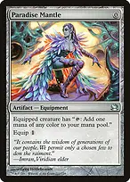
Paradise Mantle
Equip Kilo, then tap it for blue mana and a proliferate trigger. This is one of the two self-funding tap outlets for the Freed from the Real loop.
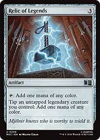
Relic of Legends
Its second ability taps an untapped legendary creature for mana without tapping Relic itself. Repeatedly tapping Kilo for blue with this ability funds Freed from the Real's untap cost.
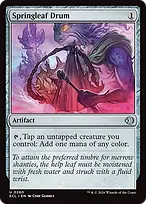
Springleaf Drum
Provides a cheap tap outlet and fixing, but Drum itself also taps. It cannot replace Mantle or Relic in the basic Freed loop unless another effect repeatedly untaps Drum.
Station taps Kilo as a cost. Kilo's proliferate trigger resolves before the station ability adds its charge counters, so the first station activation on a counterless Spacecraft cannot proliferate that Spacecraft yet.
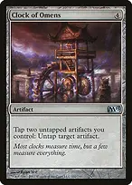
Clock of Omens
Tap Kilo and another untapped artifact to target Kilo with the untap ability. Kilo proliferates before the untap resolves, leaving it ready again at the cost of tapping the other artifact. Spare rocks and Mite tokens become additional activations; this is finite without a separate replenishing engine.
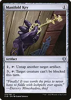
Manifold KeyUntaps Kilo, a charged mana rock, or Steel Overseer for one mana plus its tap. Its other ability can make an infect attacker unblockable. Voltaic Key provides another cheap artifact untap.
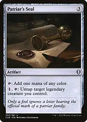
Patriar's SealFixes mana or untaps Kilo for one mana and its tap. It is flexible development, but choosing the untap mode means it is not producing mana with that same tap.
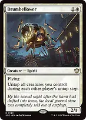
Drumbellower

Untaps creatures during each other player's untap step. Pair with Mantle or Relic for off-turn Kilo activations, or reuse Steel Overseer. Station is sorcery speed, so station alone does not capitalize on these off-turn untaps.

Unwinding ClockUntaps your artifacts during each opponent's untap step, including Kilo, your keys, mana rocks, and Insight Engine. It is a repeated resource engine, not an immediate infinite combo by itself.
The repeatable loops and what they actually produce
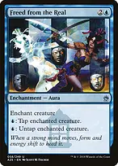
Freed from the Real
The principal combo addition. On Kilo, its blue untap ability lets Paradise Mantle or Relic of Legends pay for every repetition. On Crystalline Crawler, it enables the separate All Will Be One damage loop described below.
Loop one needs Kilo enchanted by Freed from the Real and either Paradise Mantle attached or Relic of Legends on the battlefield. Start with Kilo untapped, or pay an initial blue mana to untap it. Tap Kilo for blue, resolve its proliferate trigger, spend the blue to untap Kilo, and repeat a chosen finite number of times. This produces arbitrarily many proliferations but no net mana from the base loop.
Use that loop to increase poison already placed on opponents, charge a seeded Darksteel Reactor to twenty, grow an already-seeded Walking Ballista, or trigger All Will Be One from counters already present. If all relevant permanents and players have no counters, repeated proliferation creates none. Springleaf Drum alone is not the required reusable mana outlet.
With Crystalline Crawler also present and carrying at least one +1/+1 counter, each Kilo proliferation adds another counter to Crawler. Remove only the extra counter for mana and leave one as a seed. The Kilo loop now also produces arbitrarily much mana of any color, allowing you to cast a large Ballista from hand.
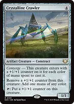
Crystalline CrawlerThe second loop does not require Kilo. Enchant a Crawler that can use its tap ability with Freed from the Real. Tap Crawler to add a +1/+1 counter, remove that counter for blue, and spend the blue to untap Crawler. Its base toughness is one, so it survives with no counters. There is no net mana or counter growth, but All Will Be One triggers every time the new counter is placed and deals one damage each repetition.
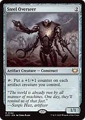
Steel OverseerSeeds and grows every artifact creature you control, including Kilo and Ballista. It also enables a third loop: with Freed attached to an Overseer that can tap, and Crystalline Crawler present, tap Overseer to add counters to the team, remove Crawler's newly added counter for blue, and untap Overseer. Crawler breaks even while the other artifact creatures grow without bound. Ballista converts its added counters to damage; All Will Be One also kills through the placements.
Summoning sickness matters on Crawler and Overseer. Kilo has haste; they normally do not. A return through Wake the Past gives artifact creatures haste that turn. Do not assume that enchanting a newly cast Crawler allows it to tap immediately.
Agatha's Soul Cauldron adds another route if Crystalline Crawler is in a graveyard. Exile Crawler and put Cauldron's counter on Kilo. With Freed enchanting Kilo, activate Kilo's borrowed tap ability to put a +1/+1 counter on itself. Kilo's tap trigger proliferates first, then the borrowed ability adds another counter. Remove one counter through the borrowed mana ability for blue to untap Kilo with Freed. Each repetition grows Kilo by one net counter; remove that extra counter for additional mana if desired, always leaving at least one to retain the borrowed abilities. All Will Be One or a seeded proliferation payoff supplies a kill. If Cauldron also exiles Walking Ballista, Kilo can spend its growing counters directly for damage.
These are multiple-piece engines. The list does not add a compact two-card instant win or extra fast mana. Its Bracket 3 intent is an interactive game with a developed board before the finish, not a race to assemble an early kill. Tell the table that repeatable combo finishes are present; the three-Game-Changer cap alone does not describe the deck's speed.
Win with the counters you accumulated
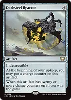
Darksteel ReactorAt twenty charge counters, its trigger wins the game for you against the whole table. It enters with no counters; seed it at upkeep, through Inspirit, or by moving charge counters with Resourceful Defense. It is indestructible but still vulnerable to exile, bounce, and effects that stop its trigger.
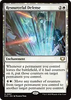
Resourceful DefenseSaves the counters from any departing permanent by putting that many of each kind onto a surviving permanent you control. Its five-mana activation can move charge counters from a Spacecraft or mana rock to Reactor for an unexpected win, or move +1/+1 counters onto Ballista for damage. Counter types do not change: charge counters on Ballista do not fund its damage ability.
If a wipe leaves Defense and a land alive, you can park recovered counters on that land and move them later. The transfer is not a resurrection or blanket protection. Moving away charge counters reduces the donor's mana output or station level, and moving every loyalty counter off a planeswalker will normally cause it to die.
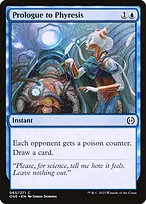
Prologue to PhyresisSeeds one poison counter on each opponent and replaces itself with a card. One existing poison counter plus nine ordinary proliferations eliminates that player. Without poison already present, Kilo cannot manufacture it.
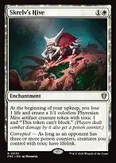
Skrelv's HiveKept as requested. Its Mites are artifact bodies for Clock of Omens and can deal combat damage to seed poison. They cannot block, and new Mites normally cannot attack immediately. The upkeep life loss is a real cost if the game stalls.
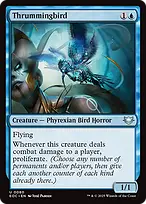
ThrummingbirdKept as requested. A combat-damage proliferation source that works without Kilo, but must connect with a player. It is neither an artifact nor a free tap outlet.
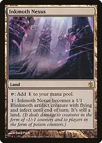
Inkmoth NexusAnother poison starter and a way to exploit stored +1/+1 counters. It must be animated before receiving creature-targeted effects, and mana for animation and protection competes with developing your engine. Ten poison counters, not ten damage from a single source, is the loss threshold.
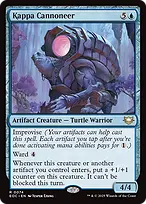
Kappa Cannoneer
Retains a combat win route when graveyard hate or enchantment removal interrupts the combos. Artifact entries grow it and make it unblockable for that turn. Ward four taxes targeting but does not protect it from untargeted removal.
Build mana and a hand without relying on Kilo
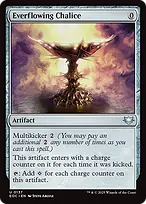
Everflowing ChaliceCheap scalable colorless mana that grows with proliferation. It needs at least one charge counter to begin growing, and colorless mana cannot directly pay Freed's blue activation.
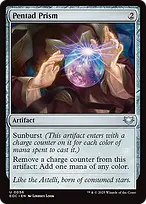
Pentad PrismFixes early colors and can turn proliferated charge counters into more mana. Leave one counter when you still need it as a proliferation target; spending the last one stops that growth until another effect seeds it.
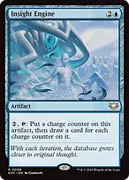
Insight EnginePay two and tap it to add a charge counter, then draw equal to its total charge counters. Untappers let it draw repeatedly, but the activation costs mana and the draw is not optional once activated. Do not charge it to an enormous number through a loop and then accidentally draw your library.
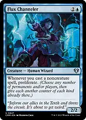
Flux ChannelerProliferates on noncreature casts, including most rocks, enchantments, and interaction. A creature that is also an artifact is still a creature spell and does not trigger it.
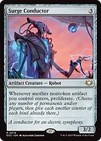
Surge ConductorProliferates when another nontoken artifact enters, including artifacts returned through Emry or Wake the Past. Hive's token entries do not trigger it.
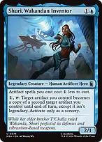
Shuri, Wakandan InventorDiscounts artifact spells and temporarily copies an artifact onto another artifact without copying legendary status. Copy a useful mana or draw artifact; the recipient keeps its existing counters and tapped status. Copying an object does not itself cause it to enter the battlefield.
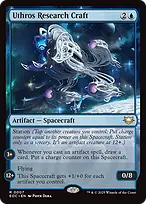
Uthros Research CraftOne station activation with Kilo supplies its three-charge threshold after Kilo's trigger resolves. It then draws from artifact casts and builds more charge counters, making it both a draw engine and a donor for Resourceful Defense.
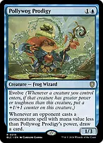
Pollywog ProdigyEvolve can seed a +1/+1 counter, then proliferation grows its power and broadens the opposing spells that draw cards. Overseer does not affect it because it is not an artifact creature.
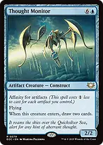
Thought Monitor
Affinity can make this a cheap two-card refill and an artifact body for Clock of Omens. Keep enough artifacts on the field to exploit the discount rather than treating it as an unconditional one-mana spell.
Find, protect, and rebuild the engine
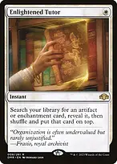
Enlightened TutorThe second Game Changer can find Freed, Mantle, Relic, Reactor, All Will Be One, or Defense. It puts the card on top, so account for when you can actually draw and cast it. Find the missing job rather than automatically finding another multiplier.
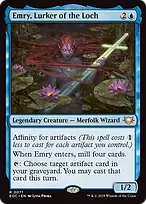
Emry, Lurker of the LochRecasts artifacts from the graveyard, but you must still pay their costs and obey casting timing. It does not recur Freed, Defense, or All Will Be One. Recasting Ballista through Emry lets you pay X properly.
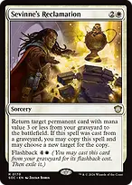
Sevinne's ReclamationRetrieves Freed, Defense, Mantle, Relic, Overseer, or another cheap permanent. Its graveyard cast can return two pieces through the copy. A directly returned Ballista normally has no counters and dies.

Swords to PlowsharesEfficient creature exile. Dispatch supplies a second exile effect when metalcraft is actually present; below three artifacts it only taps its target. Generous Gift and Wear // Tear cover other permanent problems.

Agatha's Soul CauldronRepeatable graveyard interaction and a counter seeder. Exiling Walking Ballista gives its activated damage ability to every creature you control with a +1/+1 counter; exiling Crystalline Crawler shares its counter-to-mana and tap-to-add-a-counter abilities. Steel Overseer supplies counters across your artifact creatures so they can participate. This trades unrestricted permanent destruction for graveyard control and additional combo paths.
Cauldron shares only activated abilities, not Kilo's proliferate trigger, static abilities, or entering counters. Keep at least one +1/+1 counter on a creature if it must retain the borrowed abilities. Cauldron's mana flexibility applies to creature abilities, not to Freed's abilities, which belong to an enchantment; Freed still needs actual blue mana. Removing Cauldron switches off the shared abilities, and exiling your own creature cards prevents Emry or Wake the Past from recovering those cards while they remain exiled. If you want both Crawler and Ballista exiled, Cauldron requires two activations, with an untap between them.
What to keep and how to sequence it
Keep three lands with a credible route to blue, red, and white, plus cheap development and a tap outlet or card engine. Do not keep a hand consisting only of finishers and multipliers. A two-land hand needs dependable early mana and card access, not merely expensive draw spells.
Deploy a counter source before chasing multiple proliferations. Darksteel Reactor, Cornucopia, and Ballista need their first relevant counter; Kilo does not put it there from nothing.
Mana from Mantle or Relic is available immediately, but Kilo's proliferate trigger still uses the stack. Allow necessary triggers to resolve and preserve the counter you need as a seed. Opponents can respond to the triggers and Freed activations unless your protection actually stops that response.
Assemble protection before exposing the last combo piece when possible. Freed is an Aura and can be lost with its creature to removal; preserve Sevinne's Reclamation as a route back into the game rather than using it casually.
For a Reactor finish, count both Reactor's charge counters and the charge counters available to move with Defense. Moving them is a five-mana activated ability, keeps their type, and reduces the donor. With ten on Reactor, Skate is sufficient without an infinite loop.
Use the simplest available payoff. Prologue plus repeated proliferation usually needs fewer board objects than creating infinite mana and casting Ballista. The Crawler plus Freed plus All Will Be One line is valuable when Kilo has become too expensive or is disabled.
Choose a finite number of repetitions and explain the repeated actions and payoff. The list retains 36 lands and its three original Game Changers; keeping the deck appropriate for its stated bracket also depends on its intended speed and the table's expectations.